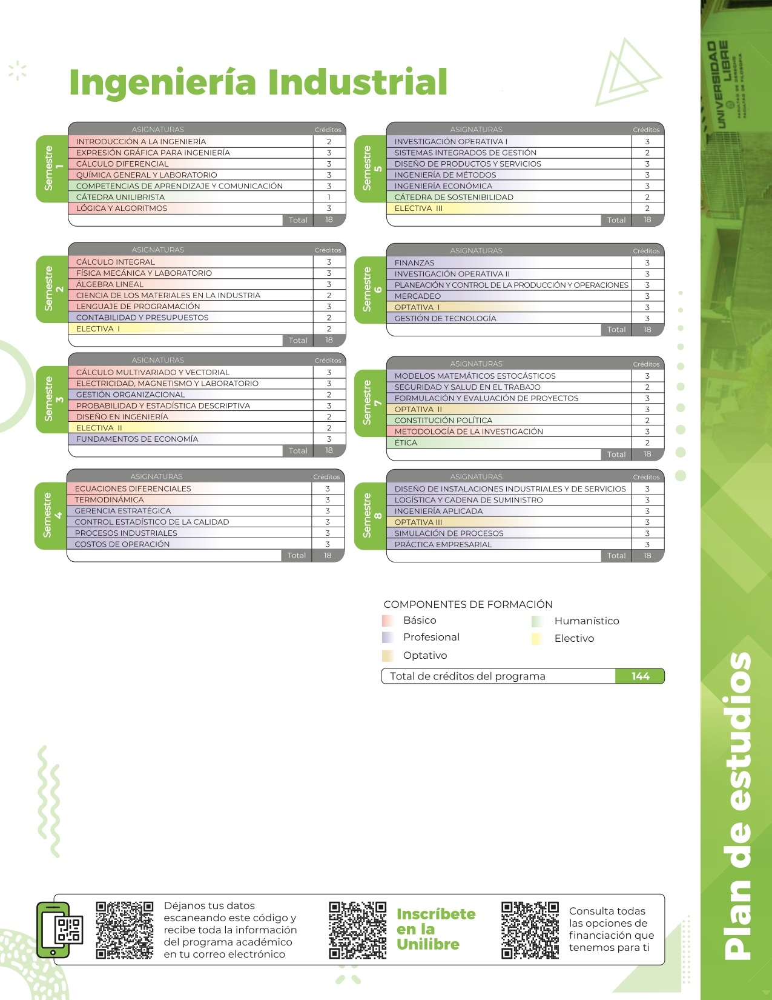

Ingenieria Industrial |
Ingenieria de Sistemas |
Formar ingenieros industriales líderes para la transformación del sector productivo de la Región Caribe y del país, con cualidades éticas, sensibles a la preservación y equilibrio del medio ambiente, a la identidad nacional y regional, capaces de comprender e influenciar en su entorno social y económico globalizado,promoviendo la libertad, la tolerancia, el pluralismo ideológico y el respeto por la diversidad del país. Ser un programa académico de alta calidad, reconocido por su aporte a la transformación social, desarrolloorganizacional sostenible, avance tecnológico e innovación,a nivel nacional y global, de acuerdo con los principios filosóficos y éticos institucionales. |
Formar ingenieros de sistemas líderes, capaces de diseñar, implementar y gestionar soluciones tecnológicas innovadoras que contribuyan a la transformación digital del país y al desarrollo sostenible de la Región Caribe. Profesionales con sólidos principios éticos, comprometidos con la protección del medio ambiente, el respeto por la identidad cultural, y preparados para enfrentar los desafíos de un entorno globalizado, promoviendo la libertad, la tolerancia, el pensamiento crítico y la diversidad. Ser un programa académico de excelencia, reconocido por su contribución al progreso tecnológico, la innovación en sistemas de información y el desarrollo de soluciones digitales sostenibles, que impacten positivamente en la sociedad a nivel nacional e internacional, en concordancia con los valores filosóficos y éticos institucionales. |
|  |